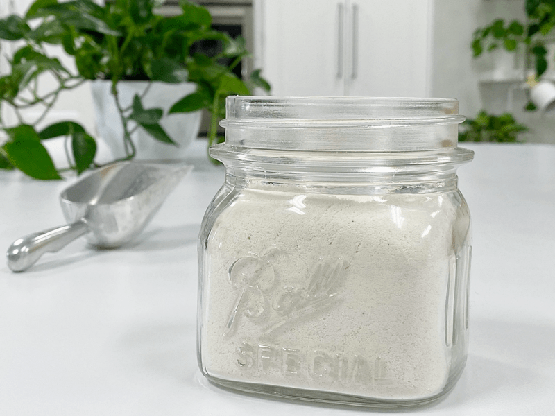

Almond Flour – from Almond Pulp / skins removed
If you need a white, fine, raw almond flour… this is the next best thing to what you find commercially made. As you may or may not be aware, the almond pulp is the by-product of making nut milk. You can’t purchase almond pulp at a store… Yet. I am waiting for the day that someone figures out how to bring this to the market.

TECHNIQUE
The trick is to remove the almond skins once the almonds are done soaking before you blend them with water to create the almond milk. The peeled almonds will leave you with a pure white almond pulp that is wonderful for making raw crackers, cookies, breads, tart crusts, and so on.
Many people find the skins of almonds hard to digest. Therefore removing them can be more comfortable on the tummy. So it’s a double win. If you make small amounts of the almond milk and worry that you will never make enough to use in a recipe, no problem, each time you make almond milk, place the pulp in a freezer-safe ziplock bag and pop it in the freezer until you have saved enough to make a recipe.
So, to create this white, fine flour, you have to soak the almonds, remove the skins, make the milk, spread the almond pulp on a dehydrator sheet, and dry it. Once dry, allow it to cool, and then process it to a fine flour.
Special Use Flour
I would recommend saving this special white pulp/flour for recipes that require a light appearance in the finished product. You will need to make sure that the other ingredients added, are in the lighter tones as well. For example, quickly take a peek at this recipe… Raw Almond Cardamon Bundt Cake… see that beautiful white inner cake? Made from the white almond pulp.
I made this recipe with 4 1/2 cups of almonds… through the process, it yielded me… 4 1/2 cups of pulp and 10 cups of almond milk. For the nut milk ratio, I used 2:1 (twice as much water as almonds). You can tweak this to your liking by adding less or more water.
 Ingredients:
Ingredients:
Yields 4 1/4 cups pulp
- 4 1/2 cups raw almonds, soaked & dehydrated/skinned
- 8 cups water
Preparation:
- Before you make the almond milk, keep this in mind… If you like to sweeten your almond milk, be sure to remove the pulp first, so you don’t flavor the pulp.
- After soaking the almonds, remove the skins. Read how (here).
- Once the skins are removed, drain and discard the water. Give the almonds a rinse.
- Place the almonds and water in the blender. Blend for about 60 seconds until the nuts are completely broken down. Depending on the blender size, you may need to do this in two stages.
- Pour the almond milk through a nut bag. Twist and squeeze the liquid from the bag.
- Store the nut milk in the fridge for up to 5 days or freeze for about 3 months.
- Store the almond pulp in the fridge for 2-3 days or freeze for about 3 months or longer.
Creating flour:
- Spread the pulp on a non-stick dehydrator sheet and dry at 145 degrees (F) for 1 hour, then reduce to 115 degrees (F) for 4-8 hours or until it is completely dry.
- The dry time will vary depending on the climate, the machine you use, how thick or thin you spread the pulp, and how full the machine is, so use these times as a guide.
- Once dried and cooled, grind it down to a nice fine flour in a food processor, blender, or other electric grinding devices that you may have.
- To create a really fine flour, grind it, sift it, and grind again.
- Store the almond flour in a glass jar and place it in the fridge or freezer to protect it from going rancid.
- It is always best to make it as you need it to preserve the nutrients, but that’s not always feasible.
- Nuts, in general, are high in fat and can go rancid. That is why I keep all my nut products in either the fridge or freezer.
Culinary Explanations:
- Why do I start the dehydrator at 145 degrees (F)? Click (here) to learn the reason behind this.
- When working with fresh ingredients, it is essential to taste test as you build a recipe. Learn why (here).
- Don’t own a dehydrator? Learn how to use your oven (here). I do, however honestly believe that it is a worthwhile investment. Click (here) to learn what I use.
- Do I need to soak almonds before making milk? Yes, read why (here).
- Click (here) to learn how to remove the skins off of the almonds.
- If you love making my own almond milk but don’t have enough hand strength. Click (here) for a new technique I discovered.
- You would love to make almond milk, but can’t get your family to drink it because it separates. Have no fear. I have a recipe to make “Homogenized” Almond Milk; it stays creamy and smooth ever after days of sitting in the fridge. Be sure to do this after you have separated the pulp from the milk, so it doesn’t taint your pulp.
- You don’t have time to make your own milk and dehydrate the pulp. You just need a quick raw almond flour right now. I got your back, click (here).
- Ok, Amie Sue… I have tons of almond pulp, but I don’t want to dehydrate it to make flour, what else can I do with it? Glad you asked! On the left side of your screen towards the top, you will see a (search) box. Type in “almond pulp” and oodles of recipes will pop up for you. The same goes for searching for recipes that use “almond flour.”
© AmieSue.com